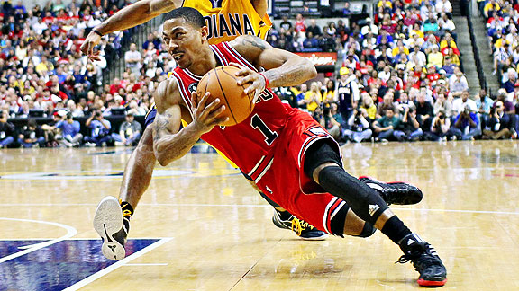
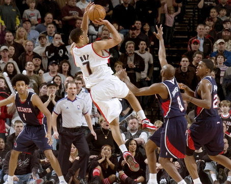
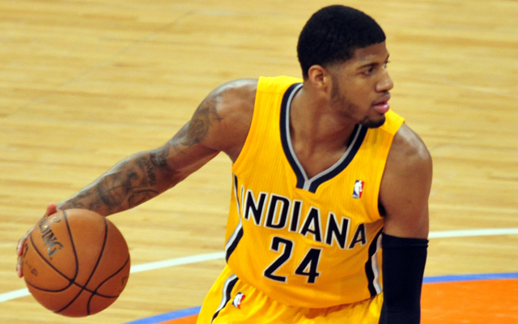

The National Basketball Association (NBA) is the pre-eminent men's professional basketball league in North America, and is widely considered to be the premier men's professional basketball league in the world. It has 30 franchised member clubs (29 in the United States and 1 in Canada), and is an active member of USA Basketball (USAB), which is recognized by FIBA (also known as the International Basketball Federation) as the national governing body for basketball in the United States. The NBA is one of the four major North American professional sports leagues. NBA players are the world's best paid sportsmen, by average annual salary per player. (Source: Wikipedia)

Out of 15 teams in each conference, only 8 teams make the playoffs. And only half of these sixteen teams make it into the second round, et cetera, et cetera. Few teams find continued success in the playoffs, only striving to make it in and to get eliminated in the first round. There are many meta-strategies to the league as a whole, including tanking, stockpiling assets to trade for players, and of course, being a big name destination to attract free agents. Yet there are many uncontrollable factors that greatly affect a team's propensity to succeed, including:
Injuries(Hover over the images)


